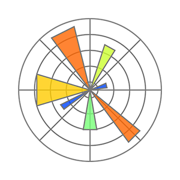

DA 348
DATA DISCOVERY AND MANAGEMENT
Creating a Simple Word Cloud in Python
Wordcloud library - last edited April 1, 2021
Word Cloud is a data visualization technique to show frequency comparisons among words in a document or file. Word Cloud highlights important words by increasing the size, relative to other words, as they are more frequently repeated in the document. Word Cloud relies on Matplotlib to plot the cloud and works well with other libraries such as Pandas and NumPy. Use conda install or pip install to install Word Cloud. To use Word Cloud, we have to call both Word Cloud and Matplotlib library using import key.
conda install wordcloud
pip install wordcloud
import requests
moon=requests.get("https://raw.githubusercontent.com/akhadianharnowo/files/main/Goodnightmoon.txt")
print(moon.text)
WordCloud() function, followed by .generate() method which takes the argument words that we loaded previously.
from wordcloud import WordCloud
import matplotlib.pyplot as plt
moontext=WordCloud().generate(moon.text)
.imshow() method, that takes the Word Cloud object that we generated in the previous step. In the method, we also pass the interpolation='bilinear' to make a smooth image visualization.
plt.imshow(moontext,interpolation='bilinear')
plt.axis('off')
plt.show()
?WordCloud
?WordCloud

Accessing Wikipedia in Python via API
Wikipedia - April 3. 2021
Wikipedia library lets you access Wikipedia content through its API. Wikipedia has interesting data: texts and numbers that we can analyze in Python. We can use pip install to install Wikipedia API.
pip install Wikipedia.
.page. The method takes the name of the page on Wikipedia. Finally, we can use .content method to load all the Washburn University's content on Wikipedia.
import wikipedia
washburn=wikipedia.page("Washburn University")
print(washburn.content)
Akhadian Harnowo, Ph.D
Assistant Professor of Production and Operations Management
Washburn School of Business
Topeka, Kansas, 66621
akhadian.harnowo@washburn.edu
Popular Python Libraries
-
NumPy
Math Calculations -
 Pandas
Pandas
Data Wrangling -

Matplotlib
Data Visualization
School of Business
Data Analytics Management MBA International Business General Business Finance Entrepreneurship Economics Marketing Accounting MAcc